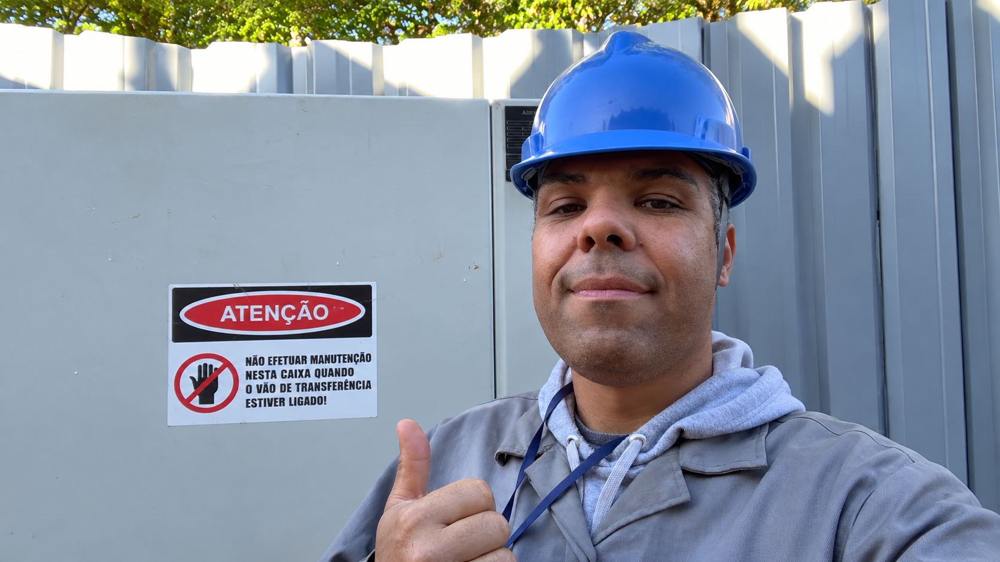
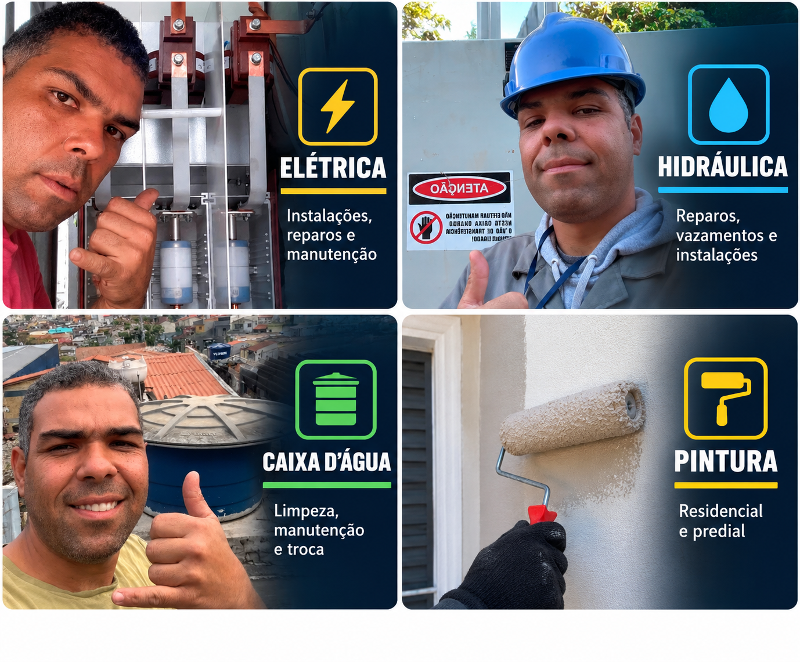

⚡
Manutenção elétrica
Troca de disjuntores, tomadas, interruptores, caixas de energia e reparos elétricos.
Solicitar orçamento →Elétrica, hidráulica, pintura, limpeza e troca de caixa d’água e reparos em geral. Atendimento direto com quem executa o serviço.

Você chamaConte o que precisa
Recebe orientaçãoAlinhamos o serviço
AgendamosAtendimento combinado
Do pequeno reparo à manutenção preventiva. Um contato para resolver diferentes necessidades da sua casa, condomínio ou empresa.
Troca de disjuntores, tomadas, interruptores, caixas de energia e reparos elétricos.
Solicitar orçamento →Limpeza, remoção, substituição e instalação de caixa d’água.
Solicitar orçamento →Instalações, pequenos vazamentos, trocas e manutenção hidráulica.
Solicitar orçamento →Pintura interna e externa, retoques e acabamento para renovar ambientes.
Solicitar orçamento →Pequenos reparos e manutenção para manter tudo funcionando corretamente.
Solicitar orçamento →Envie uma foto ou explique o que precisa pelo WhatsApp.
Conversar agora
Atendimento para manutenção residencial e predial com foco em praticidade, cuidado e comunicação direta com o cliente.
Preencha as informações principais e o WhatsApp abrirá com a mensagem organizada para o Garcia. Depois, você pode enviar fotos do local diretamente na conversa.
Atendimento 24 horas • Todos os dias • Inclusive feriados
Fale diretamente com a Garcia Manutenção e solicite seu orçamento.
Chamar no WhatsApp